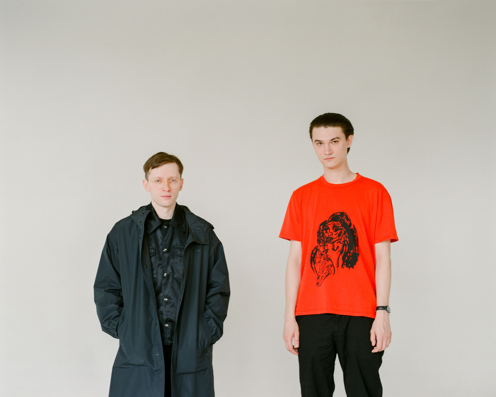

Участникам новосибирского дуэта Буерак чуть за двадцать — Саше Макееву 22, а Артему Черепанову 24. “Играем, получается, почти два года”, — подсчитывает Артем. За этот срок исполняющий романтичный постпанк с абсурдно-ироничными текстами Буерак успел стать одним из самых заметных новых гитарных коллективов страны. "Я раньше играл с другим составом, который не особо серьезно к этому относился, — продолжает Артем. — Когда я предложил поиграть то, что впоследствии стало репертуаром группы Буерак, они ответили, что это слишком просто и скучно. Я терпел, а потом всех выгнал, позвал Сашу и мы стали вдвоем играть".
О ПЕРВЫХ КОНЦЕРТАХ
Впервые нас позвали выступать в Томске осенью 2014-го. Это был фестиваль сибирского постпанка — играли Сруб, Звезды и Бумажные тигры. Сруб приехали как звезды по элитному райдеру — их заселили в квартиру пятикомнатную, суши им заказывали. А мы чуть ли не своим ходом — гонорар был пять тысяч рублей. Хотя мы запрашивали три. На концерте оделись под деревенских модников в старые кожаные куртки, а я себе на всю спину написал Буерак губной помадой. Концерт был хороший. Ты говоришь, что на ранних записях тексты невозможно разобрать, а там люди все песни знали. Зато на первых же выступлениях в Москве и Питере мы сразу были в роли хедлайнеров. Нет, это не фестивали, просто такие концерты, где перед нами играло еще несколько групп. В Сибири на нас 30-50 человек собиралось, а тут сразу по 200 — прогресс!Впервые нас позвали выступать в Томске осенью 2014-го. Это был фестиваль сибирского постпанка — играли Сруб, Звезды и Бумажные тигры. Сруб приехали как звезды по элитному райдеру — их заселили в квартиру пятикомнатную, суши им заказывали. А мы чуть ли не своим ходом — гонорар был пять тысяч рублей. Хотя мы запрашивали три. На концерте оделись под деревенских модников в старые кожаные куртки, а я себе на всю спину написал Буерак губной помадой. Концерт был хороший. Ты говоришь, что на ранних записях тексты невозможно разобрать, а там люди все песни знали. Зато на первых же выступлениях в Москве и Питере мы сразу были в роли хедлайнеров. Нет, это не фестивали, просто такие концерты, где перед нами играло еще несколько групп. В Сибири на нас 30-50 человек собиралось, а тут сразу по 200 — прогресс!